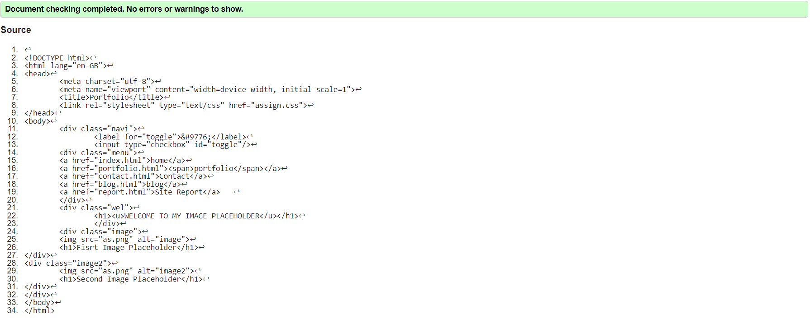
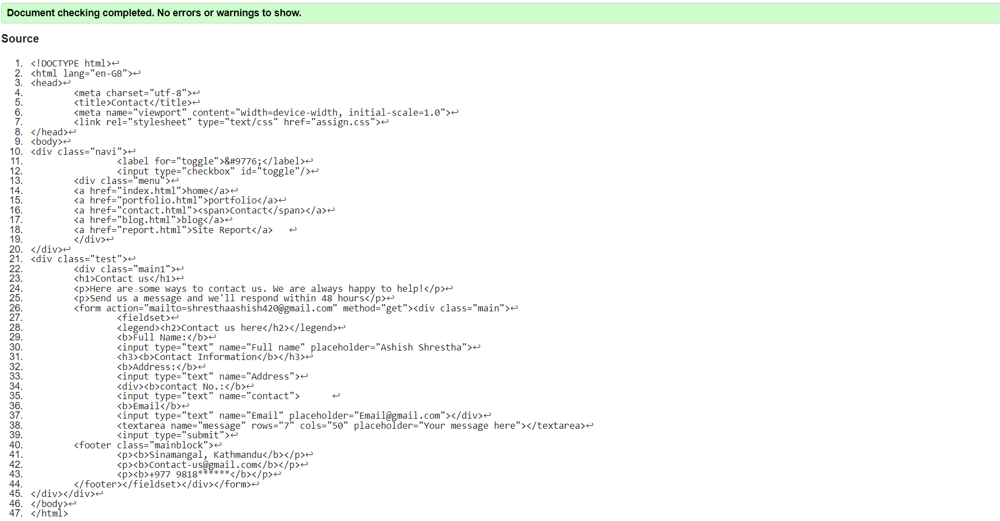
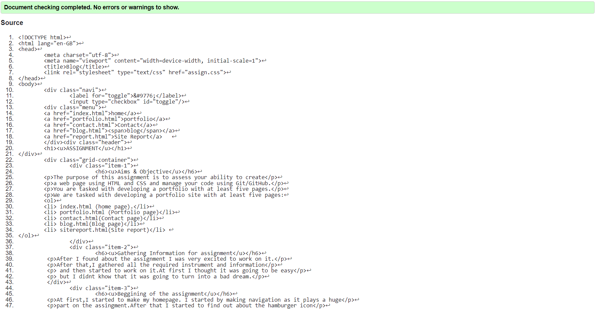
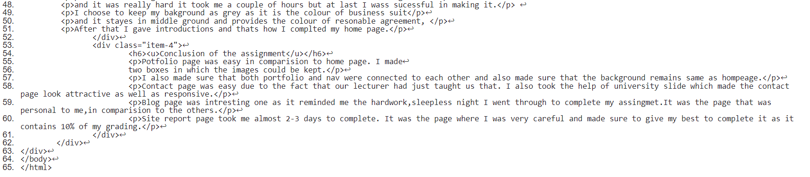
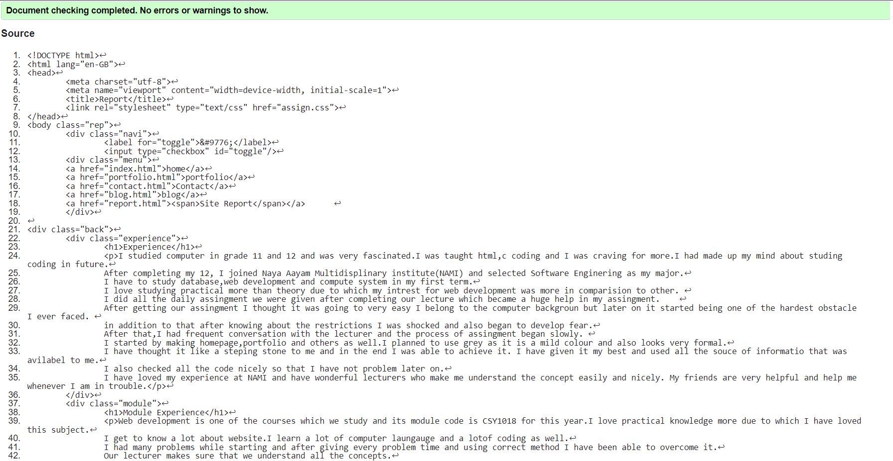
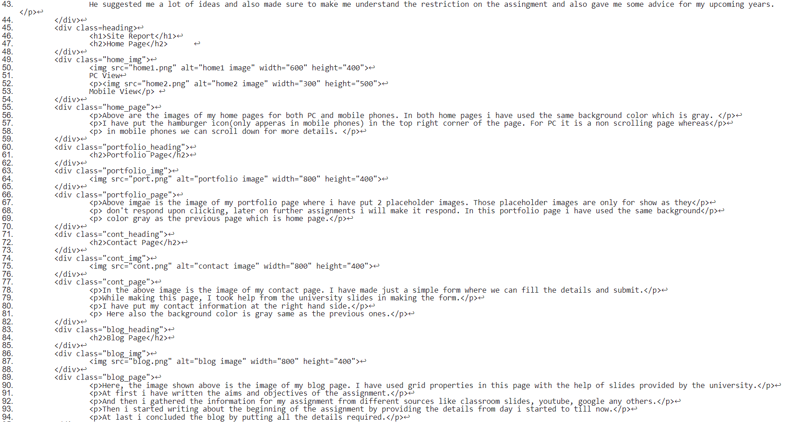
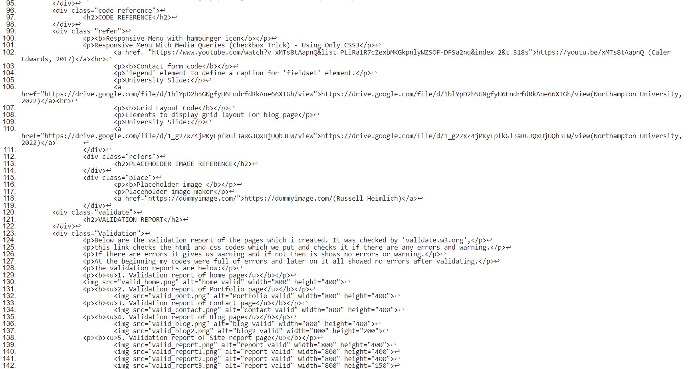
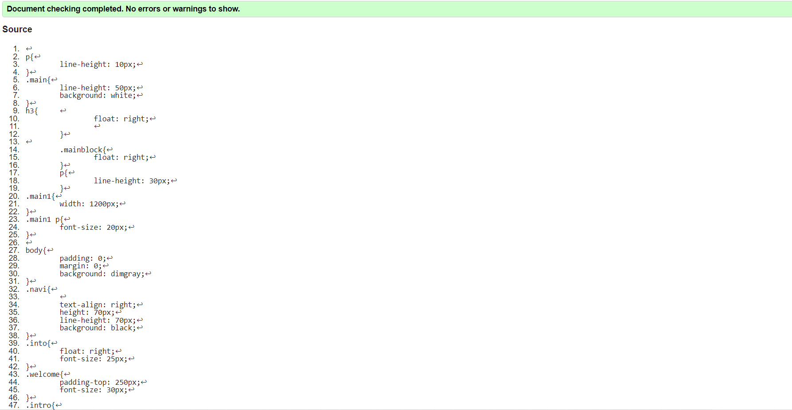
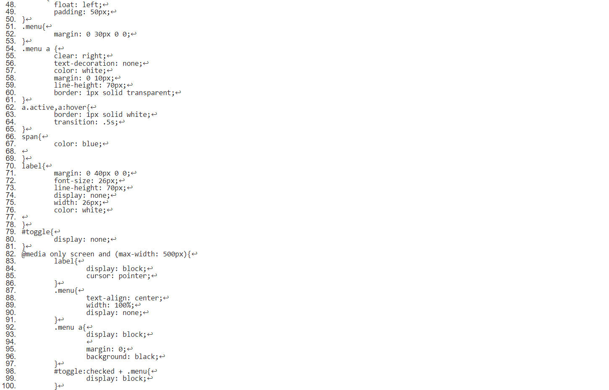
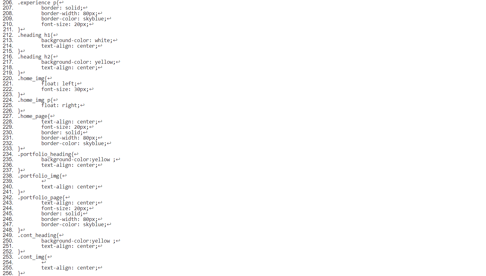

I studied computer in grade 11 and 12 and was very fascinated.I was taught html,c coding and I was craving for more.I had made up my mind about studing coding in future. After completing my 12, I joined Naya Aayam Multidisplinary institute(NAMI) and selected Software Enginering as my major. I have to study database,web development and compute system in my first term. I love studying practical more than theory due to which my intrest for web development was more in comparision to other. I did all the daily assingment we were given after completing our lecture which became a huge help in my assingment. After getting our assingment I thought it was going to very easy I belong to the computer backgroun but later on it started being one of the hardest obstacle I ever faced. in addition to that after knowing about the restrictions I was shocked and also began to develop fear. After that,I had frequent conversation with the lecturer and the process of assingment began slowly. I started by making homepage,portfolio and others as well.I planned to use grey as it is a mild colour and also looks very formal. I have thought it like a steping stone to me and in the end I was able to achieve it. I have given it my best and used all the souce of informatio that was avilabel to me. I also checked all the code nicely so that I have not problem later on. I have loved my experience at NAMI and have wonderful lecturers who make me understand the concept easily and nicely. My friends are very helpful and help me whenever I am in trouble.
Web development is one of the courses which we study and its module code is CSY1018 for this year.I love practical knowledge more due to which I have loved this subject. I get to know a lot about website.I learn a lot of computer laungauge and a lotof coding as well. I had many problems while starting and after giving every problem time and using correct method I have been able to overcome it. Our lecturer makes sure that we understand all the concepts. He suggested me a lot of ideas and also made sure to make me understand the restriction on the assingment and also gave me some advice for my upcoming years.
Mobile View
Above are the images of my home pages for both PC and mobile phones. In both home pages i have used the same background color which is gray.
I have put the hamburger icon(only apperas in mobile phones) in the top right corner of the page. For PC it is a non scrolling page whereas
in mobile phones we can scroll down for more details.
Above imgae is the image of my portfolio page where i have put 2 placeholder images. Those placeholder images are only for show as they
don't respond upon clicking, later on further assignments i will make it respond. In this portfolio page i have used the same background
color gray as the previous page which is home page.
In the above image is the image of my contact page. I have made just a simple form where we can fill the details and submit.
While making this page, I took help from the university slides in making the form.
I have put my contact information at the right hand side.
Here also the background color is gray same as the previous ones.
Here, the image shown above is the image of my blog page. I have used grid properties in this page with the help of slides provided by the university.
At first i have written the aims and objectives of the assignment.
And then i gathered the information for my assignment from different sources like classroom slides, youtube, google any others.
Then i started writing about the beginning of the assignment by providing the details from day i started to till now.
At last i concluded the blog by putting all the details required.
Responsive Menu with hamburger icon
Responsive Menu With Media Queries (Checkbox Trick) - Using Only CSS3
https://youtu.be/xMTs8tAapnQ (Caler Edwards, 2017)Contact form code
'legend' element to define a caption for 'fieldset' element.
University Slide:
https://drive.google.com/file/d/1blYpD2b5GNgfyH6FndrfdRkAne66XTGh/view(Northampton University, 2022)Grid Layout Code
Elements to display grid layout for blog page
University Slide:
https://drive.google.com/file/d/1_g27xZ4jPKyFpfkGl3aRGJQxHjUQb3FW/view(Northampton University, 2022)Below are the validation report of the pages which i created. It was checked by 'validate.w3.org',
this link checks the html and css codes which we put and checks it if there are any errors and warning.
If there are errors it gives us warning and if not then is shows no errors or warning.
At the beginning my codes were full of errors and later on it all showed no errors after validating.
The validation reports are below:
1. Validation report of home page
2. Validation report of Portfolio page
3. Validation report of Contact page
4. Validation report of Blog page
 5. Validation report of Site report page
  6. Validation report of Css
  